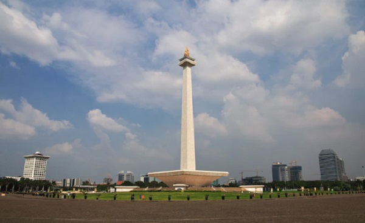

London (London, kota yang menarik untuk dikulik. Ibu Kota Inggris ini juga terpilih sebagai tempat berlangsungnya laga final Piala Eropa 2020.
Singapore (Singapura, pusat perekonomian terbesar ketiga di dunia dan menjadi kota metropolitan internasional yang berperan penting dalam perdagangan juga perekonomian internasional)

Paris (Paris, sebuah kota yang terkenal sebagai pusat mode dunia. Selain itu, Paris merupakan kota yang kaya akan sejarah, budaya, kuliner dan sastra)

Indonesia (Indonesia, dikenal dengan nama resmi Republik Indonesia atau lebih lengkapnya Negara Kesatuan Republik Indonesia, adalah negara kepulauan di Asia Tenggara yang dilintasi garis khatulistiwa)